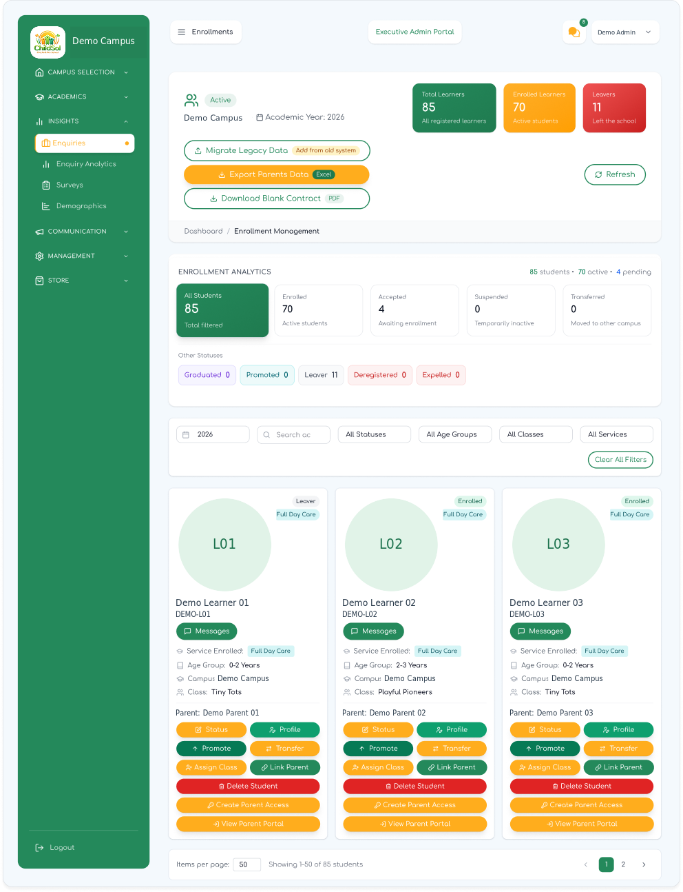
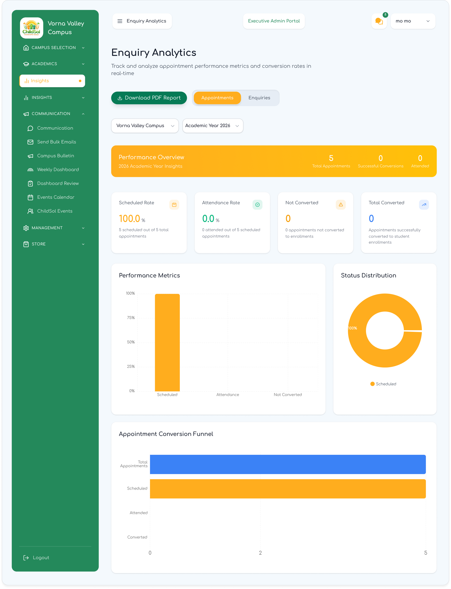
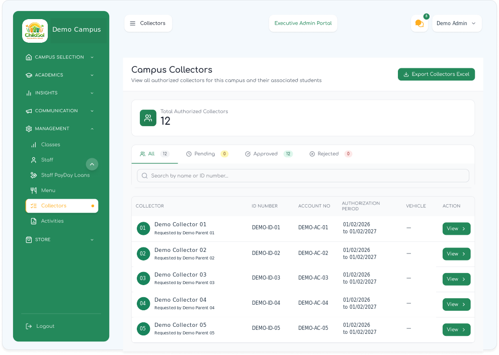
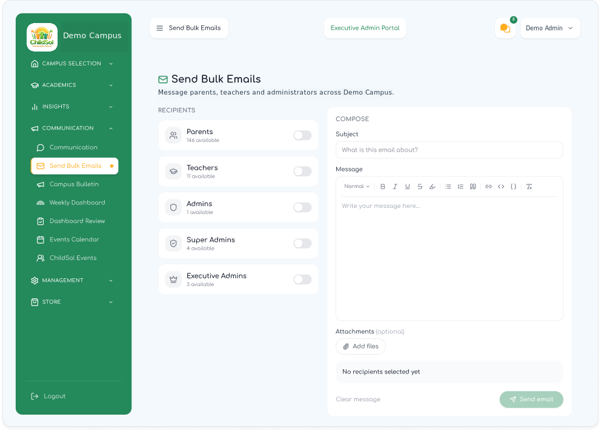

Case study
ChildSol
ChildSol is a kindergarten CRM that connects families with their child’s day and gives school staff one place to manage daily operations.
- Product
- Kindergarten CRM
- Audience
- Parents, teachers, and administrators
- Platform
- Web
The parent portal example is illustrative. The admin screenshots show fictional records and use stock photography.
Parent portal
See what your child did today
Parents can view their child’s profile, check what meals were served, and see which activities their child took part in.
Demo Learner 01
- Profile
- Sunflower class
- Meals
- Oats and fruit for breakfast
- Activities
- Story time and outdoor play
School administration
Manage enrolments and school records
Office staff can review enquiries and enrolments, organise learners by class, and manage parent and teacher records. The enrolment view helps staff see each learner’s status and connect their record to a parent account.


Enquiry analytics
Track enquiries through to enrolment
The analytics view shows how many appointments were scheduled, attended, and converted to enrolments. Staff can filter by campus and academic year to see where follow-up is needed.


Authorised pickups
Check who can collect a child
The collectors view lets staff check who is authorised to collect a learner, review approval status, and verify the authorisation period at pickup.


School communication
Send updates to the right group
Staff can select parents, teachers, or administrators as recipients, write a message, and attach files when needed. This gives the school one place to send notices to the people who need them.

